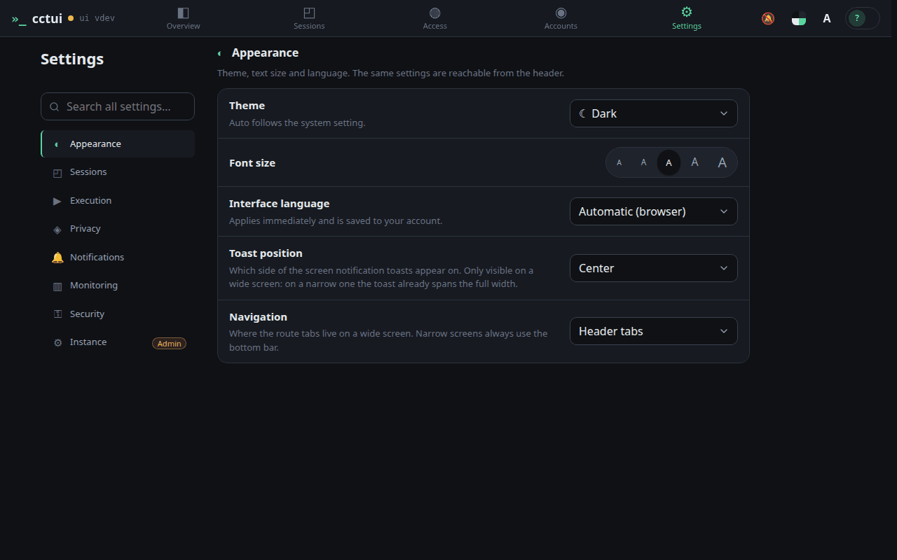
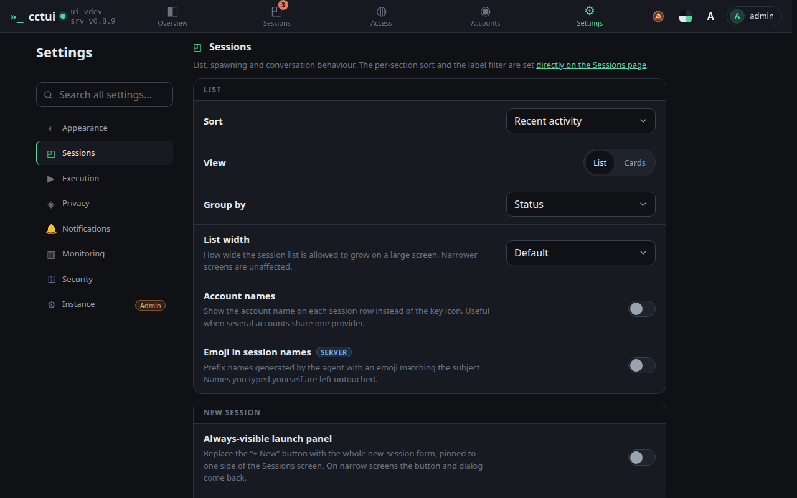
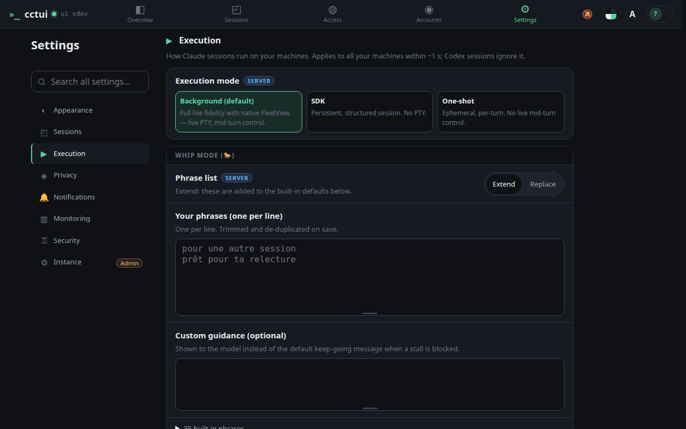
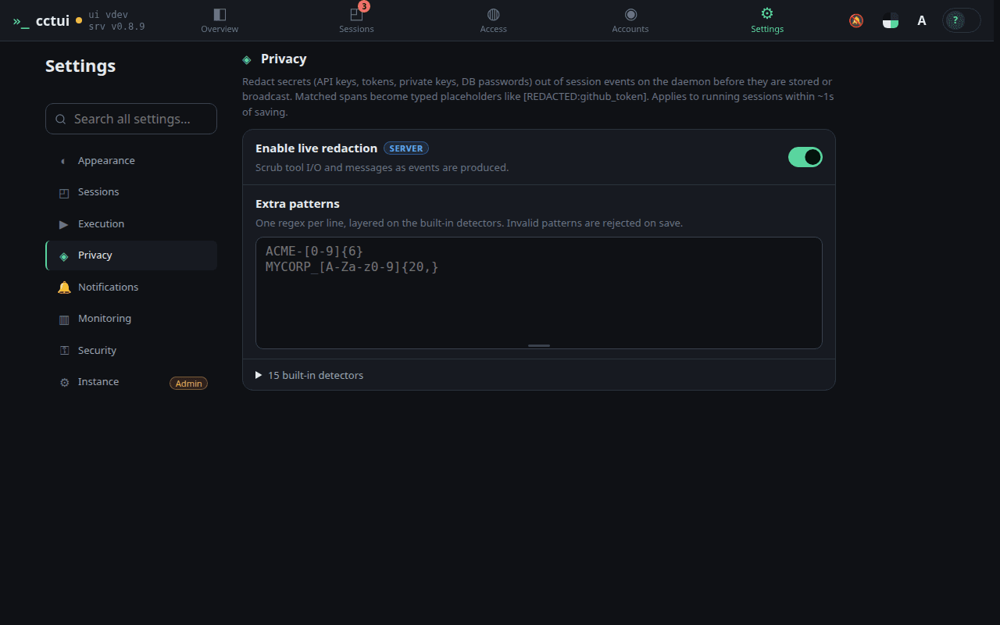

Tune how agents behave
viewport=desktop theme=dark

Make it yours Theme, font size, language, and where the navigation sits — the whole interface follows the theme you pick.

Defaults for every run How the list sorts and groups, and what a new session starts with, so you set it once instead of every time.

How much rope an agent gets Permission handling, auto-approval and the phrases that mean an agent has stopped early rather than finished.

Secrets never reach the transcript Tokens and keys are detected and replaced before anything is stored, and you can add patterns of your own.